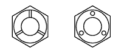

BU LÔNG TIÊU CHUẨN > CÁCH XÁC ĐỊNH ĐỘ BỀN ĐAI ỐC |
| Đai ốc đầu lục giác tiêu chuẩn hiện nay | Đai ốc đầu lục giác tiêu chuẩn kiểu cũ | Kính | |
| Đai ốc gia công dập nguội | Đai ốc ga công cắt gọt | ||
Không dấu | 4N | ||
Không dấu (w/ Vòng đệm) | Không dấu (w/ Vòng đệm) |  Không dấu | 5N (4T) |
 | 6N | ||
| 7N (5T) | |||
| 8N | |||
 |  | Không dấu | 10N (7T) |
 | 11N | ||
 | 12N | ||